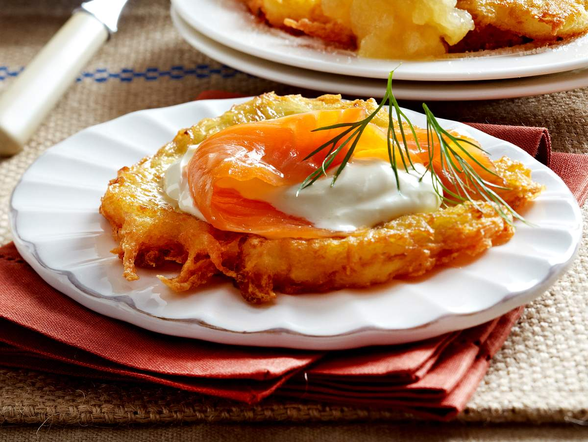

German potato pancakes are a restaurant staple, a homemade classic, and a popular street food snack. They are prepared with a thick batter that employs grated raw potatoes, flour, and eggs, and are usually shaped into flat, round discs that are shortly pan-fried until golden and crispy.
Meal prep time : 25 minutes
Servings : 8